{kind=link}
![[Demo image]](roundedge_15.jpg) A box with the four edges in the x-direction rounded, like a can of sardines on its side.
A box with the four edges in the x-direction rounded, like a can of sardines on its side.
A library module from the Persistence of Vision Ray Tracer (POV-Ray) Object Collection.
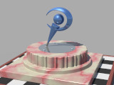 Perfectly sharp edges are rare in real life. Blunting or rounding-off the edges of ray traced objects brings out specular highlights and other, more subtle lighting effects that can make the difference between “That’s a nice ray-traced scene,” and “Wow!”
Unfortunately, with CSG this task is tedious and time-consuming. The standard include file shapes.inc has some helpful macros to assist with this task, but they are rather limited. RoundEdge builds upon shapes.inc and adds some additional objects and functions.
| Key Files | |
|---|---|
| File | Description |
roundedge.html | The user manual (this document) |
roundedge.inc | The RoundEdge software |
roundedge.jpg | Sample output |
roundedge_nn.jpg |
Illustrations of the various features (28 images) |
roundedge.pov |
A demonstration scene file, which was used to render the sample illustrations in this manual |
READMEnnnnnn.html |
Important information that you need to know |
| Other Files | |
| File | Description |
roundedge.css | A support file for the user manual |
roundedge_description.txt | A brief description of RoundEdge |
roundedge_keywords.txt | A list of keywords |
roundedge_prereqs.txt | Prerequisites (empty file) |
roundedge_thumbnail.jpg | Sample output |
cc-LGPL-a.png | Administrative support file |
Versionnnnnnn.js |
Administrative support file |
The file roundedge_cc-lgpl.png is no longer used.
Include this file once prior to using any of the features of RoundEdge:
#include "roundedge.inc"
Including the file more than once is unnecessary, but harmless.
The descriptions of the objects assume valid arguments. If the arguments are not valid (for example, a negative radius), then the shape is undefined, with no guarantee of what it will look like or that it will fit anywhere. To assist the user, a warning or error message will be issued.
Requires POV-Ray version 3.6 or later.
All file names in this module and all global and local identifiers defined in roundedge.inc comply with the Object Collection revised naming standards. The prefixes for this module are “roundedge” and “RE,” including any uppercase and lowercase variations. Identifiers from functions.inc, shapes.inc, and transforms.inc are referenced.
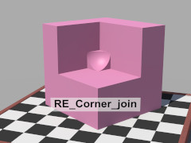 An instant blob for the point of intersection of three orthogonal planes. It can be used to patch the seams left by the straight join macros. The joint is at the origin, and the curve faces the positive x-y-z octant. (In the illustration, the object has been rotated to match the corner.) To avoid potential coincident surfaces, the object overlaps the origin.
rBlob: 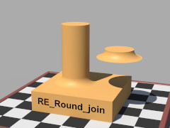 An instant blob for a vertical cylindrical post joined to a horizontal plane. The intersection of the post’s axis with the plane is at the origin. To avoid potential coincident surfaces, the bottom surface of the join is slightly below the origin.
RPost: rBlob: 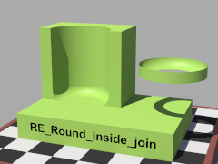 An instant blob for a vertical hollow cylinder joined to a horizontal plane. The intersection of the cylinder’s axis with the plane is at the origin. To avoid potential coincident surfaces, the bottom surface of the join is slightly below the origin.
RHollow: rBlob: 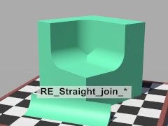 An instant blob for the join between a y-normal plane and a z-normal plane. To avoid potential coincident surfaces, the object overlaps the line of intersection.
v_Start: End_x:
rBlob: Dir: An instant blob for the join between an x-normal plane and a z-normal plane. To avoid potential coincident surfaces, the object overlaps the line of intersection.
v_Start: End_y:
rBlob: Dir: An instant blob for the join between an x-normal plane and a y-normal plane. To avoid potential coincident surfaces, the object overlaps the line of intersection.
v_Start: End_z:
rBlob: Dir: 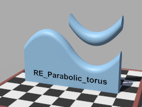
A circle of radius R parallel to the y-z plane, swept along the curve y = Hx2 | z = 0.
The user is responsible for bounding. The objects are prone to floating point error, so an isosurface function, RE_fn_Parabolic_torus(), is also provided.
H: R: 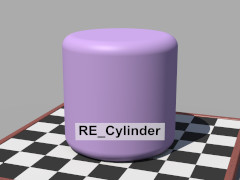
A wrapper for macro Round_Cylinder() with several enhancements:
Round_Cylinder_Union(), this generally results in faster renders. (This feature can be disabled by setting RE_Split_union to on.)
A, B: ROuter: rEdge: Use_merge:
yes if the object is to be transparent, no otherwise.
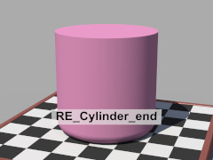
A cylinder that is rounded on one end. The resulting object will fit snugly within cylinder { A, B, ROuter }.
A: B: ROuter: rEdge: Use_merge:
yes if the object is to be transparent, no otherwise.
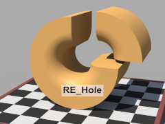
A cylinder with a hole along the central axis.
The edges of the hole are rounded.
The resulting object will fit snugly within
cylinder { A, B, ROuter } and snugly around
cylinder { A, B, RInner }.
A, B: ROuter: RInner: rEdge: Use_merge:
yes if the object is to be transparent, no otherwise.
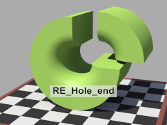
A cylinder with a hole along the central axis.
The edge of the hole at one end is rounded.
The resulting object will fit snugly within
cylinder { A, B, ROuter } and snugly around
cylinder { A, B, RInner }.
A: B: ROuter: RInner: rEdge: Use_merge:
yes if the object is to be transparent, no otherwise.
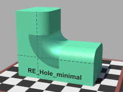
A cylinder with a hole along the central axis.
The edges of the hole are rounded, and the cylinder is just wide enough to cover the joint between perpendicular rounded boxes of the same edge radius.
The object will fit snugly around
cylinder { A, B, RInner }.
A, B: RInner: rEdge: Use_merge:
yes if the object is to be transparent, no otherwise.
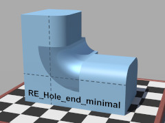
A cylinder with a hole along the central axis.
One edge of the hole is rounded, and the cylinder is just wide enough to cover the joint between perpendicular rounded boxes of the same edge radius.
The object will fit snugly around
cylinder { A, B, RInner }.
A: B: RInner: rEdge: Use_merge:
yes if the object is to be transparent, no otherwise.
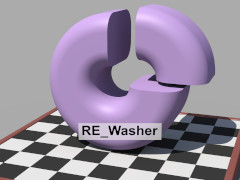
A cylinder with a hole along the central axis.
The edges of the cylinder and the hole are rounded.
The resulting object will fit snugly within
cylinder { A, B, ROuter } and snugly around
cylinder { A, B, RInner }.
A, B: ROuter: RInner: rEdge: Use_merge:
yes if the object is to be transparent, no otherwise.
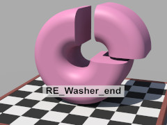
A cylinder with a hole along the central axis.
The edges on one side of the cylinder and the hole are rounded.
The resulting object will fit snugly within
cylinder { A, B, ROuter } and snugly around
cylinder { A, B, RInner }.
A: B: ROuter: RInner: rEdge: Use_merge:
yes if the object is to be transparent, no otherwise.
The first macro creates a box with all its edges rounded off. The remaining macros create boxes with only some rounded edges. The intent of the partially rounded box macros is to reduce object counts. This can result in significantly faster renders where differences, intersections, or photons are used.
Despite the large number of macros in this section, there are only four basic shapes: the fully rounded box; and three partially rounded boxes that are pre-rotated into various orientations by the macros.
A, B:
rEdge: Use_merge:
yes if the object is to be transparent, no otherwise.
The resulting object will fit snugly within box { A, B }.
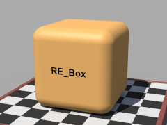
A wrapper for macro Round_Box() with two enhancements:
Round_Box_Union(), this generally results in faster renders. (This feature can be disabled by setting RE_Split_union to on.)
A box with the four edges in the x-direction rounded, like a can of sardines on its side.
A box with the four edges in the y-direction rounded, like a can of sardines.
A box with the four edges in the z-direction rounded, like a can of sardines on its side.
![[Demo image]](roundedge_16.jpg) A box with the four corners on the −x side and the eight adjacent edges rounded.
A box with the four corners on the −x side and the eight adjacent edges rounded.
A box with the four corners on the +x side and the eight adjacent edges rounded.
![[Demo image]](roundedge_17.jpg) A box with the four corners on the +y side and the eight adjacent edges rounded.
A box with the four corners on the +y side and the eight adjacent edges rounded.
A box with the four corners on the −y side and the eight adjacent edges rounded.
![[Demo image]](roundedge_18.jpg) A box with the four corners on the −z side and the eight adjacent edges rounded.
A box with the four corners on the −z side and the eight adjacent edges rounded.
A box with the four corners on the +z side and the eight adjacent edges rounded.
![[Demo image]](roundedge_19.jpg) A box with the two top edges in the x-direction rounded.
A box with the two top edges in the x-direction rounded.
A box with the two bottom edges in the x-direction rounded.
A box with the two edges in the x-direction on the −z side rounded.
A box with the two edges in the x-direction on the +z side rounded.
![[Demo image]](roundedge_20.jpg) A box with the two edges in the y-direction on the −x side rounded.
A box with the two edges in the y-direction on the −x side rounded.
A box with the two edges in the y-direction on the +x side rounded.
A box with the two edges in the y-direction on the −z side rounded.
A box with the two edges in the y-direction on the +z side rounded.
![[Demo image]](roundedge_21.jpg) A box with the two top edges in the z-direction rounded.
A box with the two top edges in the z-direction rounded.
A box with the two bottom edges in the z-direction rounded.
A box with the two edges in the z-direction on the −x side rounded.
A box with the two edges in the z-direction on the +x side rounded.
For all of these functions, the default threshold of 0 is assumed.
Note: In order to avoid a POV-Ray scoping feature, function arguments (other than x, y, and z) are prefixed with “RE_Pn_” in roundedge.inc. In this document, these prefixes are omitted for clarity.
![[Demo image]](roundedge_22.jpg) An isosurface blobbing function. This function is based on the formula for the blob primitive, so when it’s used with
An isosurface blobbing function. This function is based on the formula for the blob primitive, so when it’s used with f_sphere(), it gives results identical to the blob primitive (within the limits of the accuracy of the isosurface).
Value:
Blob:
RE_fn_Blob() of all base functions from 1. For example:
isosurface
{ function
{ 1 - RE_fn_Blob (abs(x) + abs(z) - 1, 0.3)
- RE_fn_Blob (f_sphere (0, y, z, 0.8), 0.2)
}
max_gradient 4 / 0.2
contained_by { box { -<2.5, 2, 1>, <2.5, 2, 1> } }
}
![[Demo image]](roundedge_23.jpg) Another isosurface blobbing function. This function uses an alternate formula that gives smoother curves for some joins than the standard blob formula. Perpendicular planes yield a cylindrical blob with this formula, making it useful in conjunction with the cylinder, sphere, and torus primitives.
Another isosurface blobbing function. This function uses an alternate formula that gives smoother curves for some joins than the standard blob formula. Perpendicular planes yield a cylindrical blob with this formula, making it useful in conjunction with the cylinder, sphere, and torus primitives.
Value:
Blob:
RE_fn_Blob2() of all base functions.
isosurface
{ function
{ 1 - sqrt
( RE_fn_Blob2 (abs(x) + abs(z) - 1, 0.3)
+ RE_fn_Blob2 (f_sphere (0, y, z, 0.8), 0.2)
)
}
max_gradient 1.3 / 0.2
contained_by { box { -<2.5, 2, 1>, <2.5, 2, 1> } }
}
Note: the max gradient will typically be inversely proportional to Blob.
blob primitive?
isosurface.
isosurface?
RE_fn_Blob() or RE_fn_Blob2() instead of the isosurface blobbing methods suggested in the POV-Ray documentation?
RE_fn_Blob() and RE_fn_Blob2() match the curves of POV-Ray primitives, allowing primitive and isosurface blob to work together. The primitives can then model the bulk of the object, resulting in dramatically shorter rendering times.
The illustrations for RE_fn_Hole() and RE_fn_Wheel() demonstrate seamless joins between RE_fn_Blob2() blobs and RE_Straight_join_x().
![[Demo image]](roundedge_24.jpg) A slab with a rounded-edged hole punched through it, equivalent to
A slab with a rounded-edged hole punched through it, equivalent to
RE_Hole (-rMinor*y, rMinor*y, ∞, RMajor - rMinor, rMinor, 1).
It is intended for use with isosurface blobs.
RMajor: rMinor: ![[Demo image]](roundedge_25.jpg) A circle of radius
A circle of radius R parallel to the y-z plane, swept along the curve y = Hx2 | z = 0. Slower, but better behaved than macro RE_Parabolic_torus(). Check the message window to determine max_gradient.
H: R: ![[Demo image]](roundedge_26.jpg) A merge of a torus and a cylinder, equivalent to
A merge of a torus and a cylinder, equivalent to
RE_Cylinder (-rMinor*y, rMinor*y, RMajor + rMinor, rMinor, 1).
It is intended for use with isosurface blobs.
RMajor: rMinor: Note: In order to avoid a POV-Ray scoping feature, function arguments are prefixed with “RE_Pn_” in roundedge.inc. In this document, these prefixes are omitted for clarity.
![[Demo image]](roundedge_27.jpg) Returns the surface radius of a blob, given the field radius and field strength. The default blob threshold of 1.0 is assumed. Use this function when the exact size of a blob component needs to be known. In the illustration, the size of the opening is matched to the blob.
Returns the surface radius of a blob, given the field radius and field strength. The default blob threshold of 1.0 is assumed. Use this function when the exact size of a blob component needs to be known. In the illustration, the size of the opening is matched to the blob.
Radius: Strength: ![[Demo image]](roundedge_28.jpg) Returns the field radius that yields a blob component of the desired surface radius. The default blob threshold of 1.0 is assumed. Use this function when the exact size of a blob component is important. In the illustration, the blob is matched seamlessly to the half-torus.
Returns the field radius that yields a blob component of the desired surface radius. The default blob threshold of 1.0 is assumed. Use this function when the exact size of a blob component is important. In the illustration, the blob is matched seamlessly to the half-torus.
Distance: Strength: Returns the field strength that yields a blob component of the desired surface radius. The default blob threshold of 1.0 is assumed. Use this function when the exact size of a blob component is important. In the illustration above, the blob is matched seamlessly to the half-torus.
Distance: Radius: | Identifier | Type | Description | Default |
|---|---|---|---|
RE_MORE | float | Slightly greater than one, for avoiding coincident surfaces. | 1.001 |
RE_LESS | float | Slightly less than one, for avoiding coincident surfaces. | 0.999 |
RE_ABIT | float | Slightly greater than zero, for avoiding coincident surfaces. | 0.001 |
RE_Split_union | Boolean | If off, then split_union off will be applied to the various rounded box and rounded cylinder unions. This can result in faster rendering when photons are used. |
off |
If the user finds the default values unsatisfactory, they may be modified by declaring them prior to including roundedge.inc. For example:
#declare RE_Split_union = on; #include "roundedge.inc"
Any identifiers in roundedge.inc that are not documented in this manual are subject to change or elimination in a future update.

| Version | Date | Notes |
|---|---|---|
| 1.0 | September 2, 2008 | Compiled and adapted for the Object Collection. |
| 1.1 | June 8, 2012 | Added corner join and round inside join. |